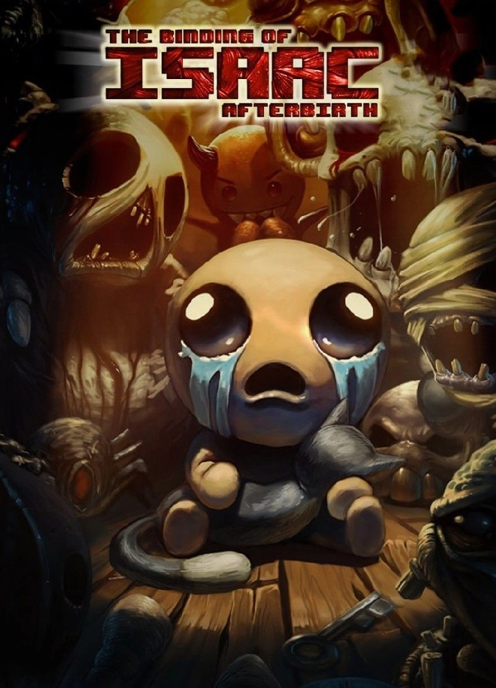
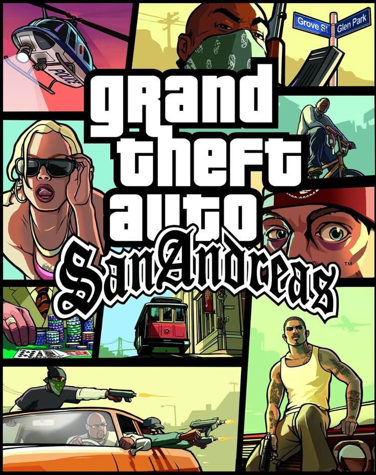
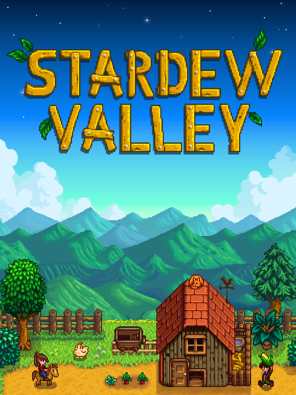

The Binding of Isaac es un videojuego independiente
diseñado
por Edmund McMillen y programado por Florian Himsl, estrenado en Steam el 28 de septiembre de 2011. The
Binding of Isaac es un juego de acción RPG con fuertes elementos de tipo Roguelike, en el cual los
niveles son generados aleatoriamente.

San Andreas es un videojuego de acción-aventura de mundo
abierto desarrollado por Rockstar North y publicado por Rockstar Games.San Andreas fue lanzado originalmente
para PlayStation 2 el 26 de octubre de 2004, aunque posteriormente se publicaron distintas versiones, tanto
para videoconsolas de sexta, séptima y octava generación, así como ordenadores, y teléfonos inteligentes.

¡Stardew Valley es un juego de rol de vida rural
abierto! Has heredado la antigua parcela agrícola de tu abuelo en Stardew Valley. Armado con herramientas de
segunda mano y algunas monedas, se dispuso a comenzar su nueva vida. ¿Puedes aprender a vivir de la tierra y
convertir estos campos cubiertos de maleza en un hogar próspero? No será fácil.